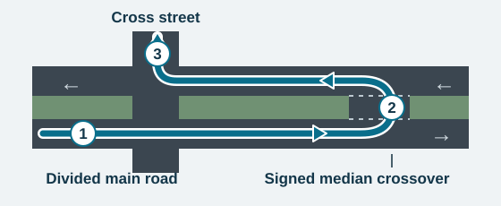

Use the linked agency page for the current format, pass threshold, and retake instructions.
Michigan road signs
Michigan Road Signs Study Guide and Test Context
Use Michigan's current driver manual, choose the correct teen or adult testing path, and work through a Michigan Left. The nationwide picture quiz is separate practice, not the Michigan exam.
Last updated:
Source contextOfficial handbook
PrivacyNo answers collected on this guide
Quality checkState-specific exam details
UpdatedNovember 20, 2026
Start here
Study path for this state
This guide combines state-specific exam details with official references and points to the shared picture quiz for interactive practice.
Open the official handbook or sign reference linked on this guide.
Use the nationwide quiz for interactive sign questions and explanations.
Check exact state wording before test day.
Michigan Left: read the signs, then choose your route

1. You are on the divided main road and want the cross street on your left. A No Left Turn sign applies at the intersection and arrows direct traffic to a crossover. Where do you go first?
Go straight through when allowed. Enter the designated median crossover, follow its controls and wait for a safe opening where required. Make the U-turn, return to the intersection, and turn right onto the cross street when safe.
2. Now you are on the side street. You want to travel left along the divided main road, but a direct left is prohibited. Do you follow exactly the same route?
No. Turn right onto the main road first, then use the designated crossover to reverse direction when allowed. Continue in the new direction on the main road; there is no final right turn back onto the side street.
3. You reach the right place for a U-turn, but the crossover signal is red. The main intersection behind you has a green light. Which signal controls your turn?
Wait at the crossover. The green light at the main intersection does not authorize the U-turn here. Follow the signal, signs and lane markings at the crossover you are using.
Michigan SOS: current manual, Michigan Lefts (p. 38) · Michigan DOT: both Michigan Left routes
Michigan study plan
Go from sign recognition to a driving decision
Use the printed page numbers in the November 2026 English edition of What Every Driver Must Know.
Identify which signal applies to your lane and what action it requires.
Try the official challenge on page 28 without looking at the answer key on page 73.
For each example, point to the stop line or the lane you would choose.
Trace the route starting on the main road, then try it again starting on the side street.
- 01Name the sign before guessing
Cover the answer. Say which shape, color, or symbol told you what the sign means.
- 02Say what you would do
For a rule sign, state the required or prohibited action. For a warning, name the hazard and what you would watch for.
- 03Retest the missed cues
Use the shared picture quiz, then retry only the signs you confused. Use the Michigan manual for state rules; the shared quiz result is not an official score.
Quick facts
- Current English manual
- November 2026 edition
- Adult knowledge exam
- Operator and road-sign parts
- First step for teens
- Certified Segment 1 driver education
Manual language and exam language are separate
Michigan SOS marks its translated manuals as older editions. They may help you learn vocabulary, but use the current November 2026 English edition to check rules and page references. The agency publishes a separate list of languages for the in-office driver knowledge exam; an available translation of a manual does not tell you which options are offered for a specific test format.
Do not use a practice score as a test result
The teen Segment 1 course uses its own state exam (70% to pass the exam for the course). For the adult test, check the Operator and Signs portions in the SOS instructions. The teen cutoff is not an adult passing rule, and neither one is the target of the shared TestDayTools picture quiz.
Choose your Michigan testing path
Start with a certified Segment 1 provider
Complete Segment 1 and pass its exam before applying for a Level 1 Learner's License with a parent or guardian. The standalone adult online exam and this practice quiz do not replace Segment 1.
Official teen licensing stepsChoose online or in office
Study for both Operator and Signs. The online option requires a computer, keyboard, mouse and webcam. Passing online does not issue a permit; arrange an SOS office visit for your Temporary Instruction Permit (TIP), vision check and documents.
Official adult test and permit stepsCheck availability before choosing a test
Use the current SOS list for in-office test languages. The adult test guidance also lists audio options. Confirm the option you need with SOS, rather than assuming a translated booklet, an office interpretation service, and the at-home test all offer the same choices.
Official in-office language optionsFAQ
Which Michigan manual should I use?
Use the November 2026 English edition of What Every Driver Must Know for current rules. Michigan SOS labels the translated editions as older versions.
Can I drive after passing the adult test online?
No. The online result is a step toward the Temporary Instruction Permit. Complete the SOS office requirements and obtain the permit before beginning supervised practice under it.
Does this page provide a Michigan-only quiz?
The unscored Michigan Left cases teach a local rule. The separate picture quiz uses a shared nationwide question bank and is not an official Michigan test.